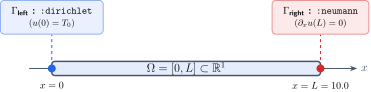
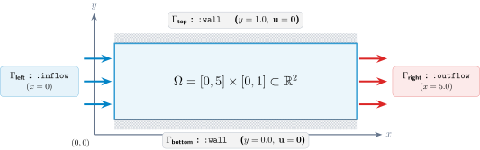
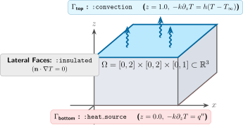

Geometry tutorial#
What you will learn. How to describe where a problem lives: a set, the names of its boundary pieces, and the domain that bundles both.
What you need first. Only a working install, see Getting started.
Where next. The mesh tutorial turns a domain into a grid of points.
Every block below runs when this page is built, so the printed values are the ones the code produces.
A first domain: a rod#
Take a rod of length 10, held at a fixed temperature at its left end and insulated at the right end. The geometry is an interval, and the two ends need names so that a condition can later be attached to each:

using Bramble
import Bramble: point, center, projection, topo_dim
rod = domain(interval(0.0, 10.0), :dirichlet => :left, :neumann => :right)
dim(rod), center(rod), collect(labels(rod))(1, (5.0,), [:dirichlet, :neumann])interval builds the closed interval \([0, 10]\). Each label => side pair is a marker: a name for a piece of the boundary. domain bundles the set with its markers, and a Domain is what mesh takes. dim is the dimension of the space the rod lives in, and center its midpoint.
Without markers, domain(interval(0.0, 10.0)) labels the whole external boundary :boundary.
Try this
Replace the interval by interval(0.0, 10.0) × interval(0.0, 1.0) and keep the two markers. dim becomes 2, and :left and :right now name the two short sides of a strip: the same words mean the same faces in every dimension.
Sets in more than one dimension#
The tensor product operator × (\times<tab>) builds hyper-rectangles from intervals:
I = interval(0.0, 1.0)
Ω_2d = I × I
Ω_3d = interval(-1.0, 1.0) × interval(0.0, 2.0) × interval(0.0, 0.5)CartesianProduct{3,Float64}:
x: [-1.0, 1.0]
y: [0.0, 2.0]
z: [0.0, 0.5]A set answers geometric questions. ∈ accepts a number in 1D, and a tuple, SVector or Vector above it:
X = interval(0.0, 2.0) × interval(-1.0, 1.0)
dim(X), extrema(X), extrema(X, 1), center(X)(2, ((0.0, 2.0), (-1.0, 1.0)), (0.0, 2.0), (1.0, 0.0))0.5 ∈ I, 1.5 ∈ I, (0.5, 0.5) ∈ Ω_2d, (1.2, 0.3) ∈ Ω_2d(true, false, true, false)extrema(X, 1) is the range along the first axis, and projection(X, 1) is that axis as an interval.
Try this
Evaluate (1.2, 0.3) ∈ X and (1.2, 1.3) ∈ X. The second point leaves the box through the top.
Naming boundary pieces#
A marker is a :label => identifier pair. The identifier is one boundary symbol, a tuple of them, or a predicate. Boundary symbols are coordinate-aligned (:xmin, :xmax, :ymin, :ymax, and so on, with aliases such as :left and :top), and the reference below lists them all.
A channel with inflow on the left, outflow on the right and no-slip walls on top and bottom:

geom = interval(0.0, 5.0) × interval(0.0, 1.0)
channel = domain(
geom,
:inflow => :left,
:outflow => :right,
:wall => (:top, :bottom)
)
dim(channel), center(channel), collect(labels(channel))(2, (2.5, 0.5), [:inflow, :outflow, :wall])The tuple (:top, :bottom) gives one name to two faces. Markers are only names at this stage: no boundary condition is attached until a problem is posed on the mesh built from the domain, see the form tutorial.
Try this
Change :wall => (:top, :bottom) to :top_wall => :top, :bottom_wall => :bottom, and print collect(labels(channel)) again. Two names let a later problem treat the two walls differently.
A domain in three dimensions#
The same two ideas, a set and named faces, carry over unchanged. A heat sink, heated below, cooled above and insulated on its four sides:

sink = domain(
interval(0.0, 2.0) × interval(0.0, 2.0) × interval(0.0, 1.0),
:heat_source => :zmin,
:convection => :zmax,
:insulated => (:xmin, :xmax, :ymin, :ymax)
)
center(sink), collect(labels(sink))((1.0, 1.0, 0.5), [:heat_source, :convection, :insulated])A Domain forwards the geometric queries of the previous sections to its set:
Ω = domain(
I × I,
:dirichlet => (:left, :right),
:neumann => (:top, :bottom)
)
dim(Ω), center(Ω), (0.5, 0.5) ∈ Ω, Bramble.is_collapsed(Ω)(2, (0.5, 0.5), true, false)Bramble.set returns the underlying set. Next, the mesh tutorial discretizes a domain into points.
Reference#
Boundary symbols#
Boundary symbols are coordinate-aligned, so the same name means the same face in every dimension:
1D:
:xmin(:left),:xmax(:right)2D:
:xmin(:left),:xmax(:right),:ymin(:bottom),:ymax(:top)3D:
:xmin(:back),:xmax(:front),:ymin(:left),:ymax(:right),:zmin(:bottom),:zmax(:top)
The viewpoint-dependent names in parentheses are aliases. boundary_symbols lists the canonical set for a given dimension:
boundary_symbols(2)(:xmin, :xmax, :ymin, :ymax)Collapsed sets#
A dimension is collapsed when its interval is degenerate (\(a = b\)), which is how a surface or interface embedded in a higher-dimensional space is written. dim is the embedding dimension and topo_dim the topological one; they differ only for a collapsed set. Bramble.is_collapsed answers per axis; it is public but not exported, hence the prefix:
line_in_2d = interval(0.0, 1.0) × point(0.0)
dim(line_in_2d), topo_dim(line_in_2d),
Bramble.is_collapsed(line_in_2d, 1), Bramble.is_collapsed(line_in_2d, 2)(2, 1, false, true)Related constructors: interval(0, 2) converts integer bounds to Float64, point(0.5) is the degenerate interval \([0.5, 0.5]\), and box(1.5, 0.2) sorts its bounds.
Predicate and time-dependent markers#
A predicate marks any subset, not only a face. A marker set built over a time interval takes (p, t) predicates:
using LinearAlgebra
m_cond = markers(
geom,
:inflow => :left,
:hot_spot => (p -> p[1] > 2.5 && p[2] ≈ 0.0)
)
m_time = markers(
geom,
interval(0.0, 10.0),
:moving_source => ((p, t) -> norm(p .- [t, 0.5]) < 0.2)
)
collect(labels(m_cond)), m_time(1.5) # the second is the marker set frozen at t = 1.5([:inflow, :hot_spot], Bramble.EvaluatedDomainMarkers{Bramble.DomainMarkers{Tuple{}, Tuple{}, Tuple{Bramble.Marker{Main.var"#5#6"}}}, Float64}(DomainMarkers(1 total), 1.5))labels flattens the three marker kinds through Iterators.flatten. Inside a loop that must not allocate, iterate label_symbols, label_tuples or label_conditions instead.